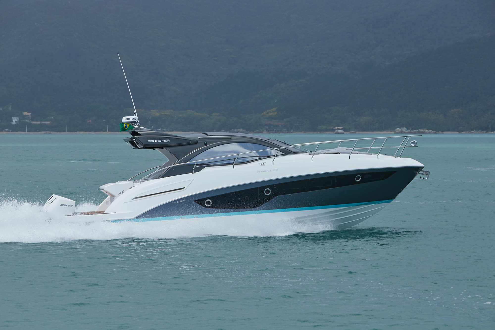
Linha Phantom
400
Linhas esportivas, DNA Schaefer. Para quem pilota — não apenas navega.
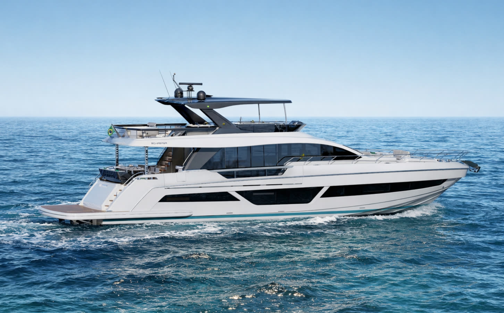
Florianópolis, Brasil
A Schaefer Yachts
"Um dos poucos estaleiros da América do Sul a dominar, sob o mesmo teto, todo o processo — da usinagem à marcenaria de acabamento."
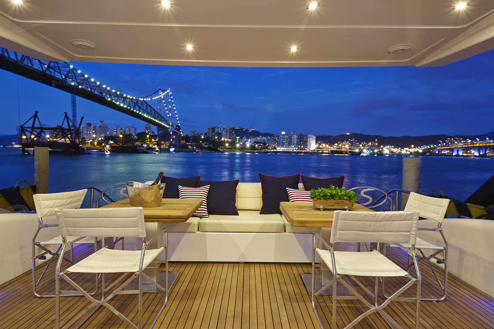
Processo construtivo
A única do mercado náutico brasileiro capaz de usinar moldes de até 75 pés em bloco único.
Cascos mais leves, resistentes e econômicos — de 36 a 83 pés.
Produção verticalizada, do casco ao acabamento interno.
A frota

Linhas esportivas, DNA Schaefer. Para quem pilota — não apenas navega.
Linha Schaefer — passe o mouse para explorar
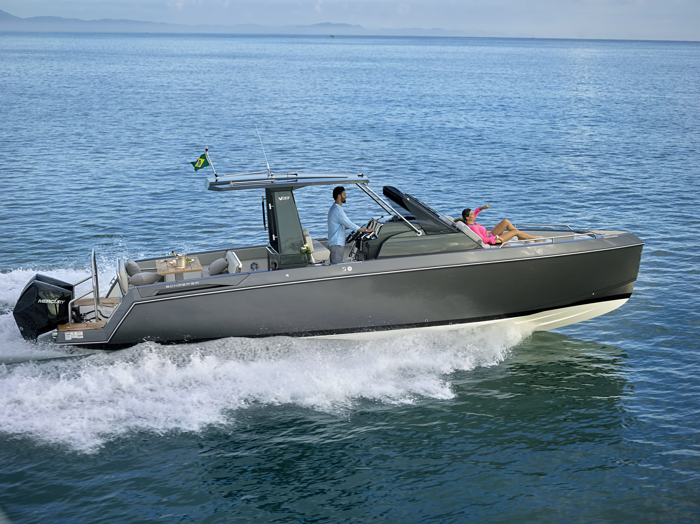
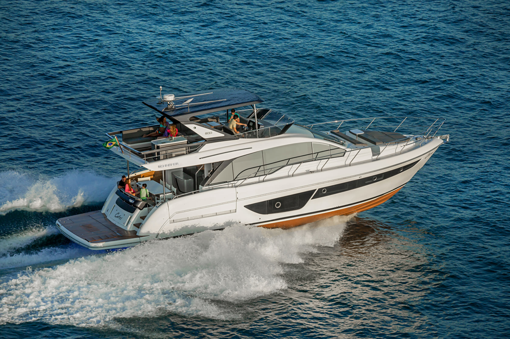
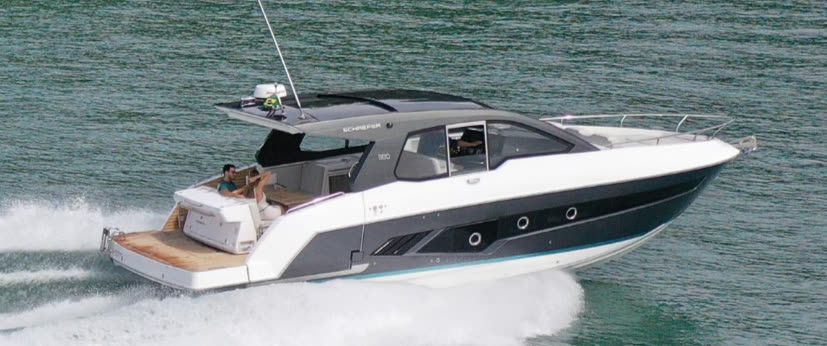
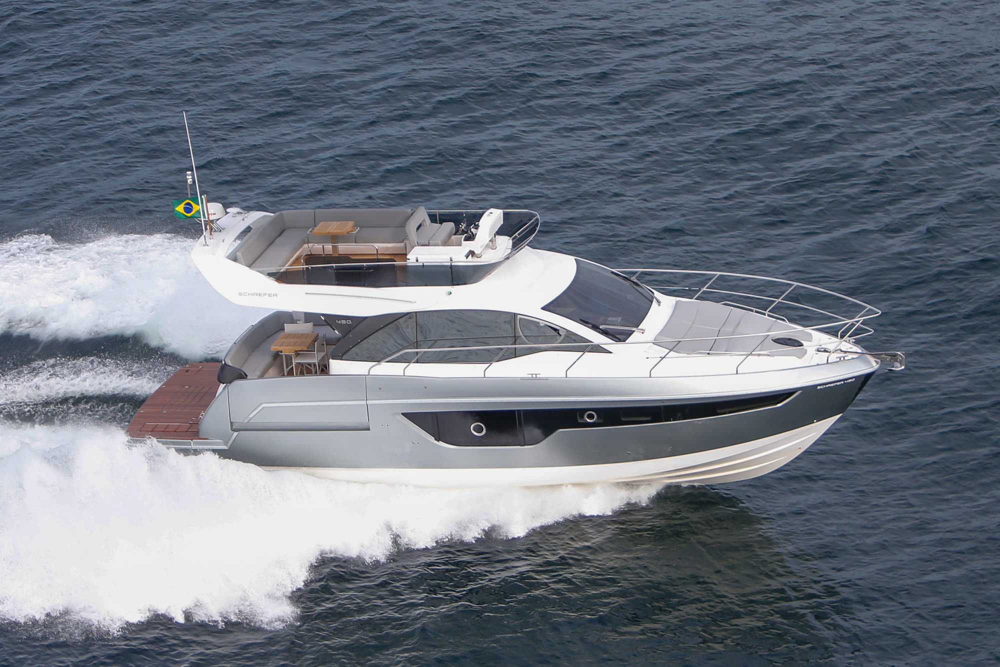
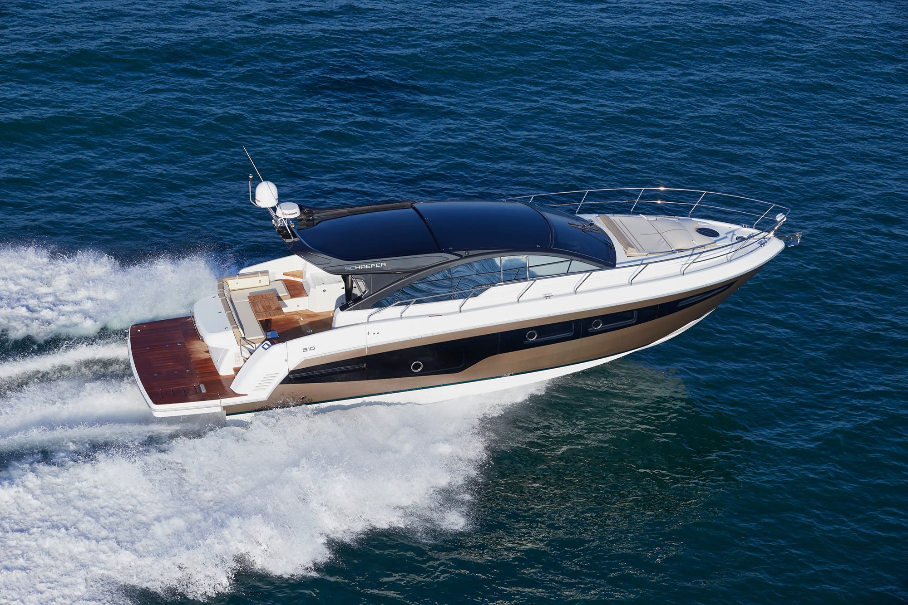
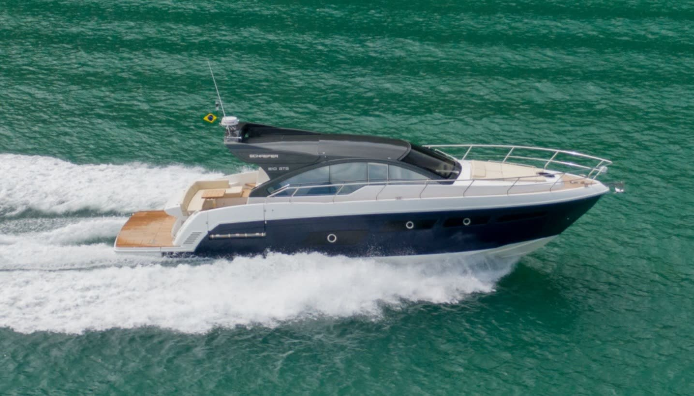
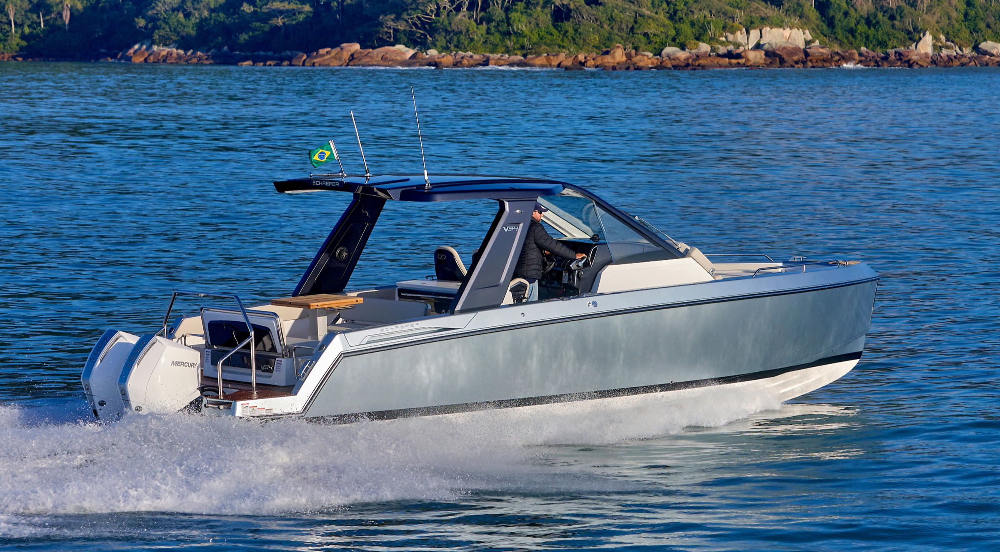
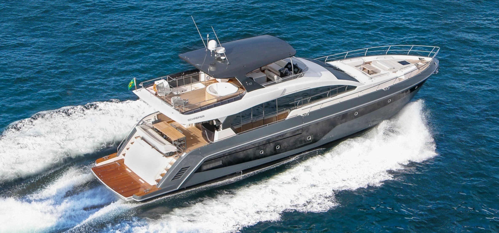
O maior iate fabricado em série no Brasil. O topo do que a Schaefer é capaz de construir.
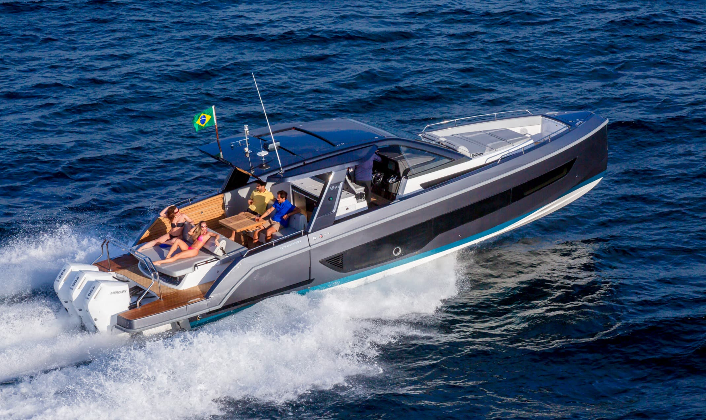
A experiência
Endereço
Rua 14 de Julho, 519 — Estreito
Florianópolis, SC — 88075-010
Telefone
(48) 2106-0001